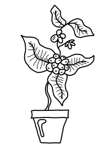
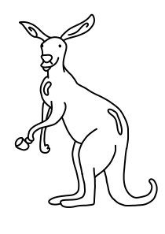

De la mano de hype te abrimos las puertas al mundo del café de especialidad y la historia de la bebida más tomada, amada y odiada del mundo, vos de qué lado estás?, vamos a descubrirlo a lo largo de 4 cursos gratuitos llenos de información, contenido multimedia y, obviamente, mucho amor y pasión por lo que hacemos, toma asiento, papel y lápiz en mano y un cafecito para arrancar con toda, suerte! ❤️

HISTORIA
En este primer paso para adentrarnos en la cafetería vas a conocer el origen y la historia de como el café es descubierto, experimentado y desarrollado hasta llegar a ser la tan famosa bebida que conocemos todos hoy en día, y mucho cuidado con las vacas locas!!, ya vas a entenderlo.
HISTORIA _MODERNA
Ahora que ya entendemos de donde salió el café, vamos a transportarnos a la actualidad y aprendamos como este llega a cambiar sus métodos de cultivo, tostado y preparación, eleva su calidad, y se convierte en "café de especialidad".

FILTRADOS
Como ya vimos en cursos anteriores, la única forma de preparar café no es mediante una máquina de espresso, y aunque este método sea el más famoso y más amado por todos, tenemos una amplia variedad de cafeteras capaces de extraer todo el potencial del grano, vamos a verlo!
LATTE _ART
Dibujos en el café!, ahora si a lo que todos vinimos, aprendamos como texturizar diferentes tipos de leche y las técnicas más eficientes para poder preparar un buen café de especialidad, rico y estéticamente a la altura de cualquier barista que se precie, a practicar y meterle ganas.